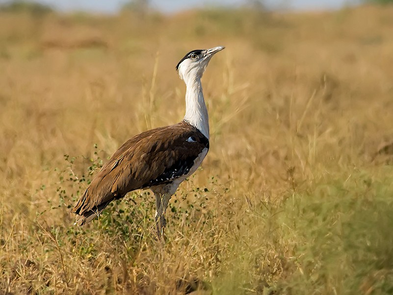

Indian Paradise-Flycatcher
Beneath the forest canopy, the Indian paradise-flycatcher moves like a drifting ribbon of white — elusive, elegant, and deeply tied to the fragile ecosystems Ataavi works to protect.

8 Endangered Birds to Watch For This Winter - Gallery
From elusive wetland visitors to rapidly declining forest dwellers, these rare sightings offer a glimpse into the fragile state of India's migratory and native bird populations.

The Vanishing Wetlands of Bharatpur
As water levels recede and habitats fragment, thousands of migratory birds are being forced to rewrite routes shaped over centuries of seasonal return.

Tracking the Amur Falcon's 22,000 Kilometer Journey
Crossing continents, oceans, and shifting climates, the Amur falcon's migration remains one of nature's most extraordinary feats of endurance.

Annual Northern Bird Walk
Each year, the Northern Birdwalk invites curious minds and quiet observers alike to trace the calls, colors, and fleeting movements of India's migratory birds.

Species Spotlight: The Indian Pitta
A flash of emerald, indigo, and rust on the forest floor — the Indian pitta returns each season like a hidden jewel, revealing itself only to those willing to pause and look closely.